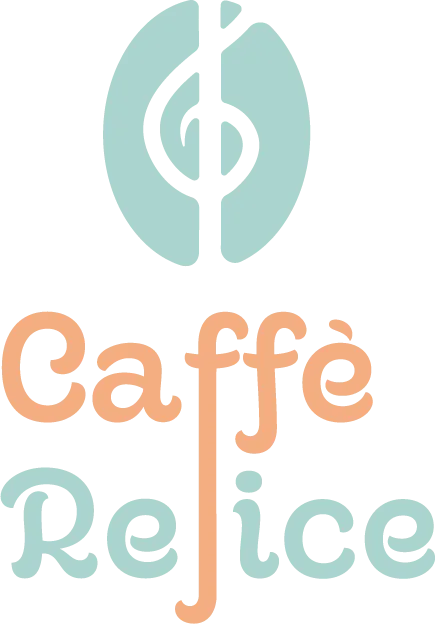
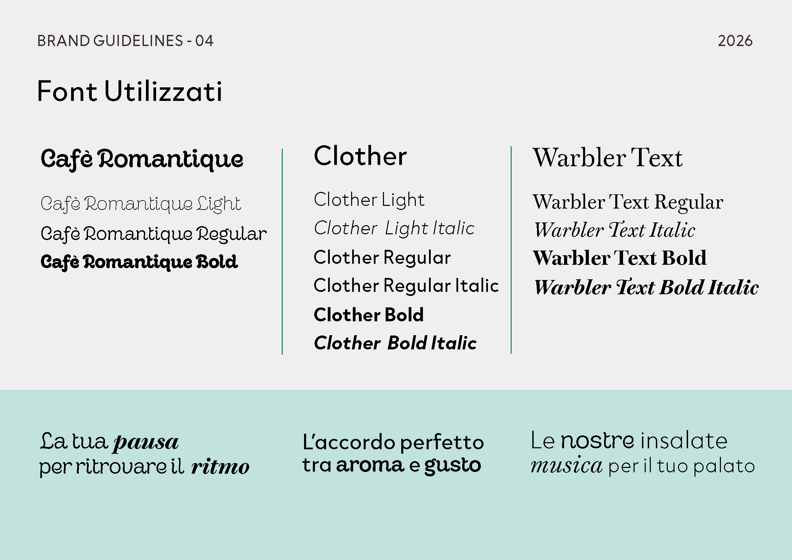
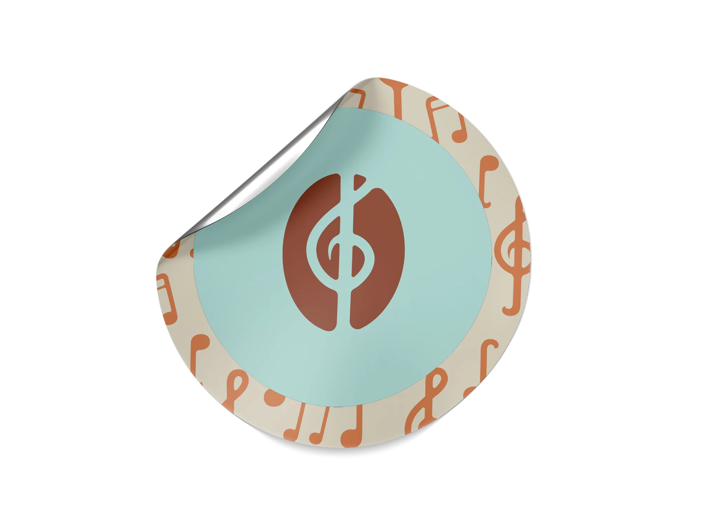
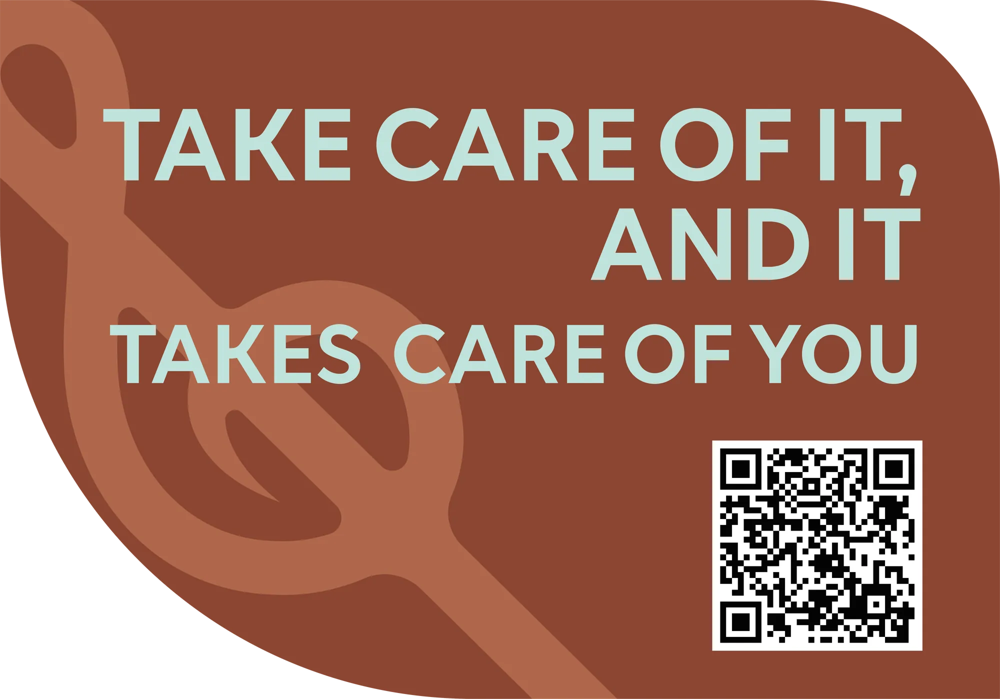
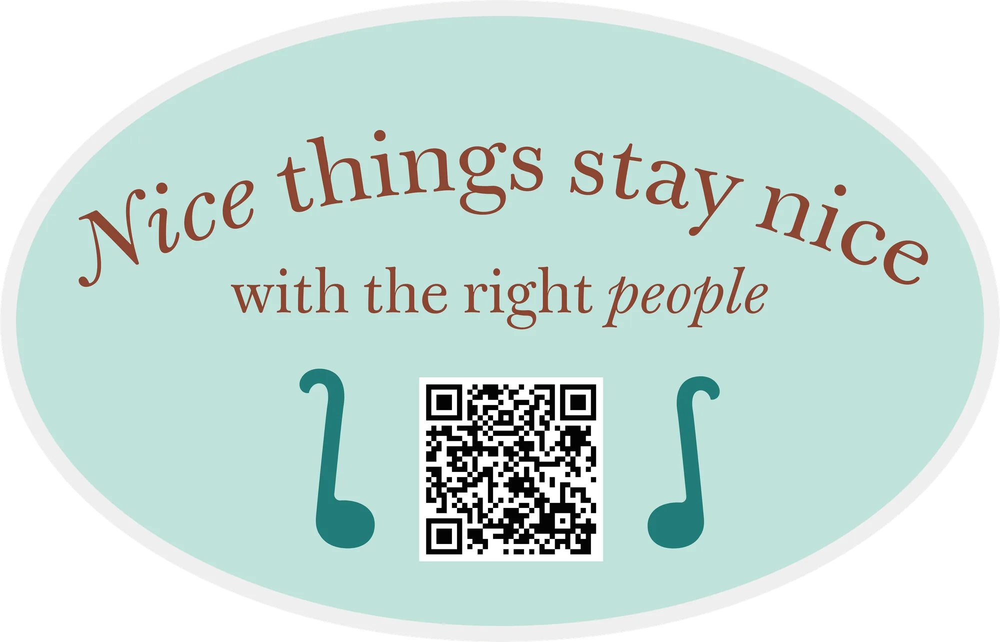
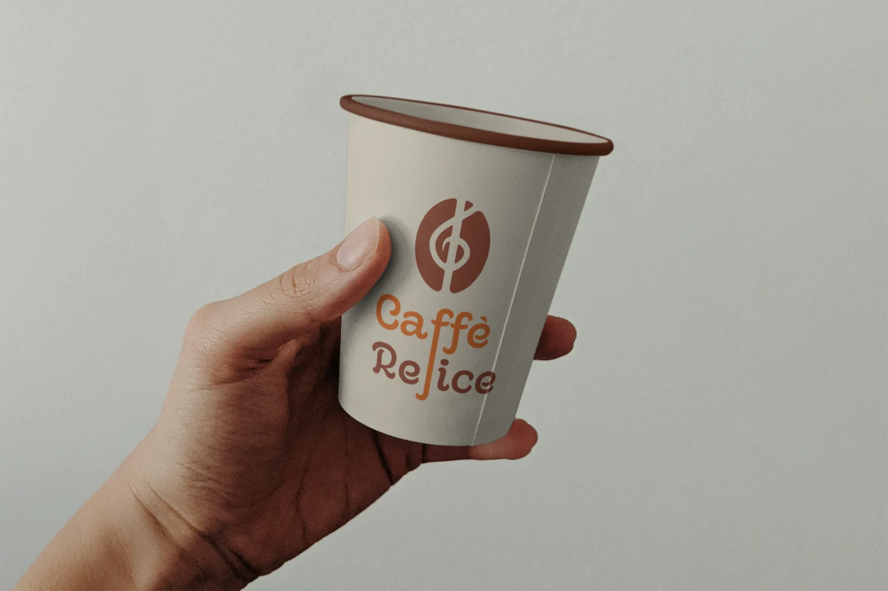
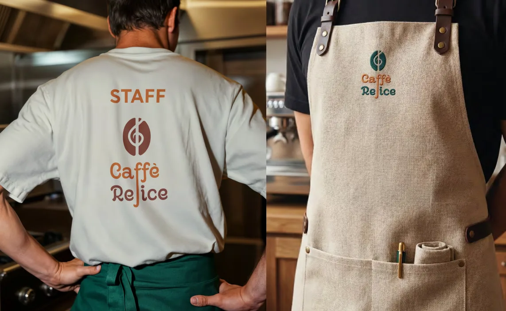

Caffè Refice
Brand Identity & Collateral
L'Incontro
Tra Aroma
ed Eleganza.
Il segno nasce da una linea verticale che le due cose hanno in comune. La fenditura al centro del chicco diventa l’asta della chiave di violino, e la chiave scende attraverso il nome fino a prendere il posto della f di Refice. Un solo gesto, due mondi. Un sistema in tre pezzi: pittogramma, logotipo e logo completo, ognuno pensato per reggere anche da solo. La chiave è ricavata in negativo dentro il chicco, quindi il segno funziona anche in monocromia. L’asta del logotipo segue la stessa linea verticale del pittogramma, sulla stessa griglia.
Materia e Colore.
Palette estratta dai materiali storici del locale: caffè tostato, terracotta e marmo.
Carattere e
Tipografia.
Il sistema tipografico integra il carattere decorativo Cafè Romantique per il logotipo, accostato alla pulizia moderna di Clother per le titolazioni e all'eleganza classica di Warbler Text per i testi di corpo e le descrizioni dei menù.

Respect
the Space.
Il design come strumento di educazione. Adesivi posizionati nel locale per ricordare il rispetto degli spazi comuni in modo elegante, ironico e coerente col brand.



Dal Digitale
Al Fisico.
L’insegna a bandiera circolare porta il logo sulla strada: fondo sabbia, pittogramma terracotta, nome in arancio e marrone. Dentro, lo staff: t-shirt crema con la scritta STAFF sulla schiena, grembiuli in lino naturale e cuoio con il logo ricamato in verde acqua e terracotta. Materiali veri e colori caldi, gli stessi su cui è stata pensata la palette.
Insegna e divise sono mockup a scopo illustrativo.


